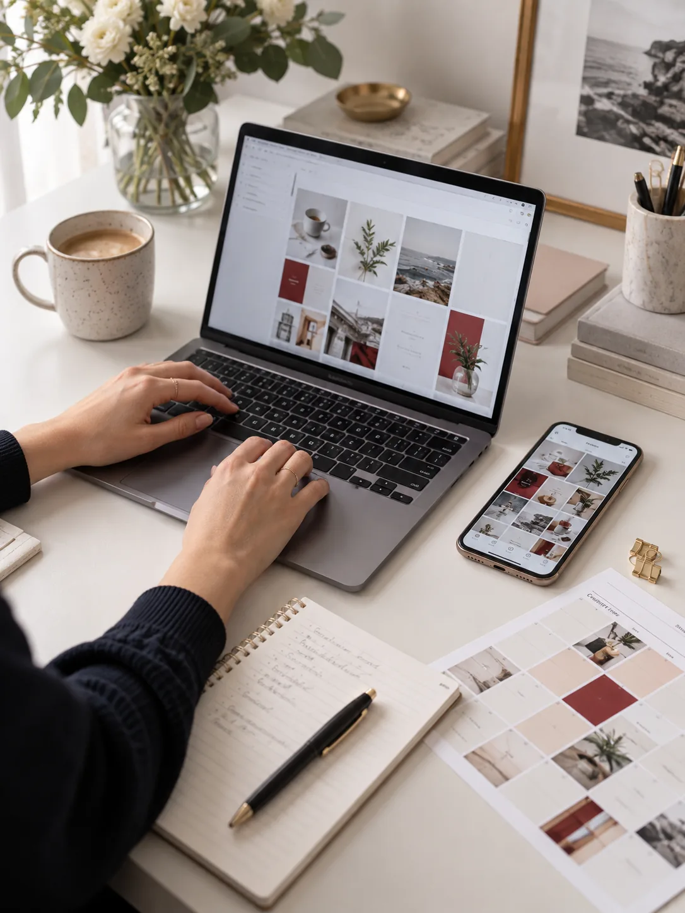
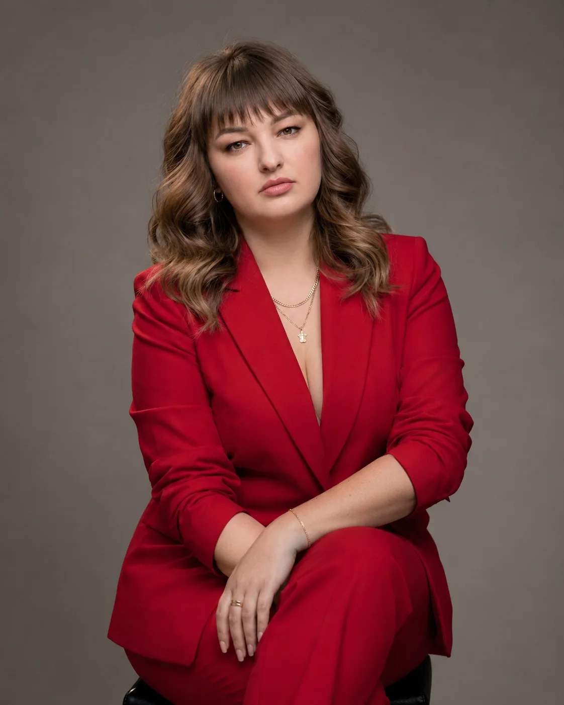
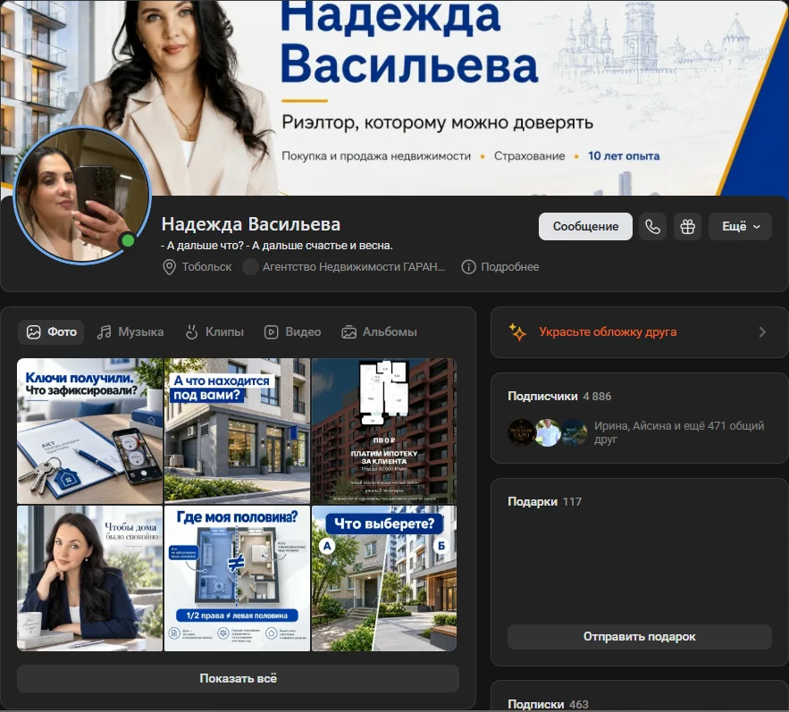
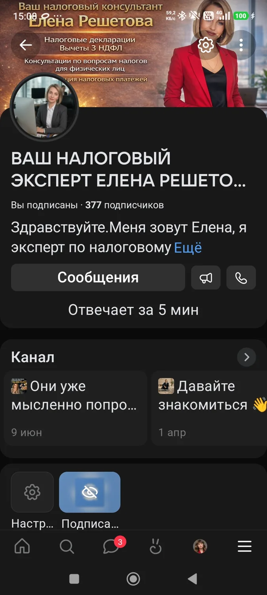
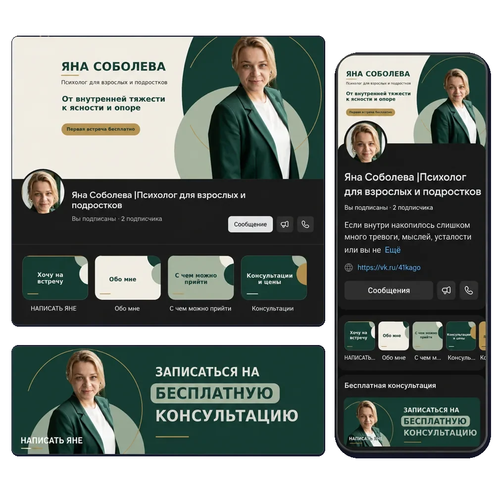
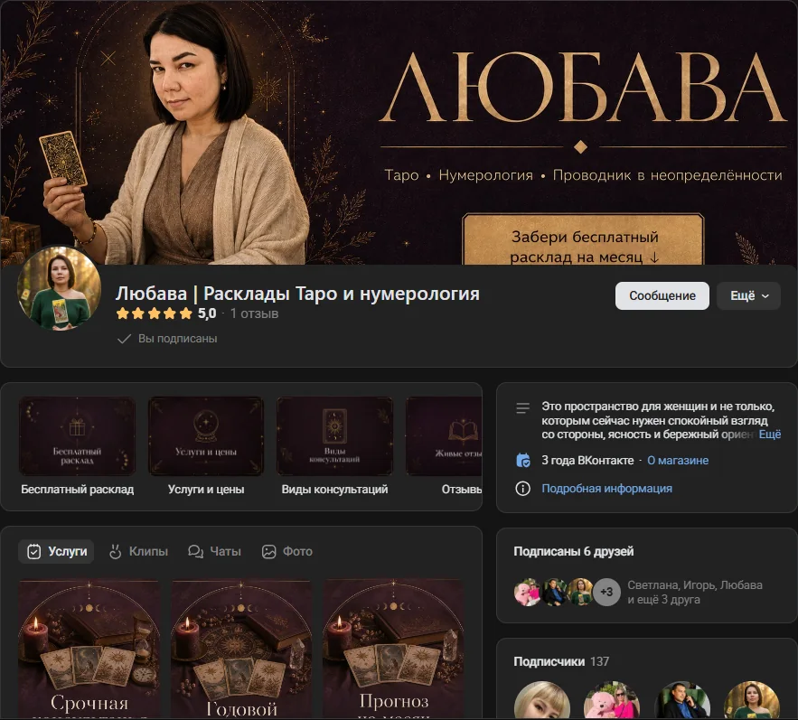
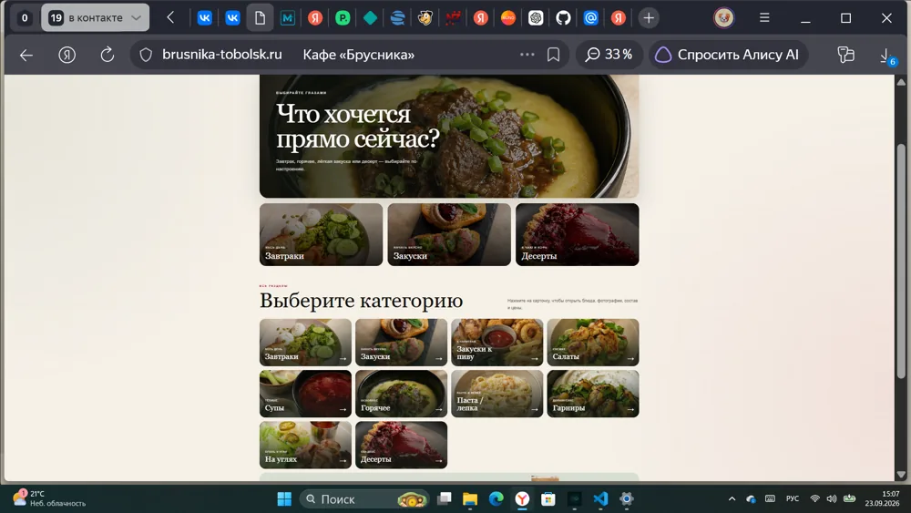

Экспертам частной практики
Юристам, налоговым консультантам, психологам и врачам, для которых точность формулировок и профессиональный образ напрямую влияют на доверие.
SMM и нейроконтент для бизнеса
Беру на себя оформление и ведение соцсетей, создаю нейроконтент и сайты для предпринимателей по всей России
В реальной работе вы — сильный специалист. В социальных сетях профессиональный уровень должен быть виден так же ясно.

Юристам, налоговым консультантам, психологам и врачам, для которых точность формулировок и профессиональный образ напрямую влияют на доверие.
Которым нужна не просто активная страница, а обращения и сделки из социальных сетей.
Которые хотят заниматься клиентами, а не каждый вечер придумывать посты и снимать материалы.
Которому нужна живая рабочая страница без постоянного личного участия владельца.
Форматы работы
Начните с бесплатного аудита или выберите услугу с понятной стартовой ценой.
Оформление, контент, активность, аудитория и конкуренты; конкретный план действий за 48 часов.
Обложка, аватар, меню и единый визуальный стиль.
Аудит, стратегия, контент и аналитика.
20–30 тем с форматами и рубриками.
Нейрофотосессии и изображения продукта под задачу.
Точная стоимость зависит от задачи и сложности проекта.
Отдельная услуга по вашему запросу.
Отдельная услуга по вашему запросу.
Все платные цены указаны с «от»; итоговая стоимость зависит от задачи и объёма работы.
Получить бесплатный аудит
Из кухни в SMM
Марина Алексейчева · SMM-стратег и специалист по нейроконтенту с 2025 года
13 лет я работала поваром: смены по 12 часов, каждые 15 минут нужно было отдавать готовое блюдо. Этот путь научил меня отвечать за свою работу и доводить её до результата. Теперь тот же принцип работает в проектах клиентов: сначала аудит и стратегия, затем контент и аналитика. Нейросети помогают производству, но решения принимаю я.
Сделано для клиентов
Показываю страницы клиентов, сделанное оформление и только подтверждённые результаты

Аудит, переоформление страницы и работа с контентом
24 сделкиза 12 месяцевОбщая аудитория — 4 627 человек
Развитие сообщества с нулевой базы
668подписчиков за 5 месяцев с нуля
Обложки, аватар, меню и единый визуальный стиль
Готовое сообщество и брендбук
Обложки, аватар, меню и карточки услуг
Оформленная витрина услуг
Сайт с QR-кодом, онлайн-меню и регистрацией гостей
QR-код → меню → регистрация → база для рассылокСнимки собственных работ. Цифры Надежды и Елены подтверждены Мариной.
Говорят клиенты
Оставляю только имя и слова клиента — без фамилий и фотографий
Вы не просто прошлись по оформлению, а увидели логику сообщества: голос, позиционирование, первые работающие форматы и риски роста. Разбор получился не формальный, а действительно полезный.
Сделала все очень качественно, указала на слабые и сильные стороны, посмотрела статистику, и подсказала что и как лучше сделать. Очень благодарна, теперь я знаю над чем работать.
Наша группа ВК стала живой и активной! Всё профессионально, качественно и креативно!
Вы не просто выполняете задачи, вы действительно «чувствуете» нашу аудиторию и находите крутые решения. Каждый пост, каждая кампания — видно, что вы подходите к делу с душой. Очень ценю вашу инициативность и готовность экспериментировать.
Особенно оценила брендбук и его возможности, всё чётко структурировано. Отдельно хотелось бы отметить поддержку в работе сообщества.
Провела глубокий аудит страницы, предложила стратегию продвижения с учётом моей аудитории и целей бизнеса. Особенно хочется отметить твою креативность и качество исполнения.